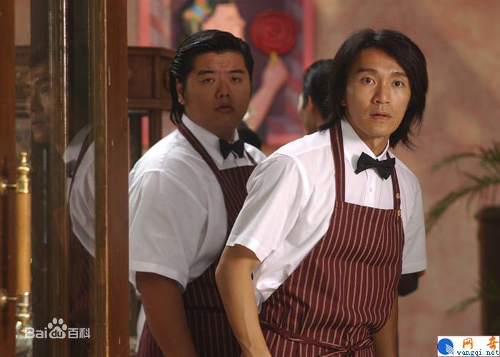
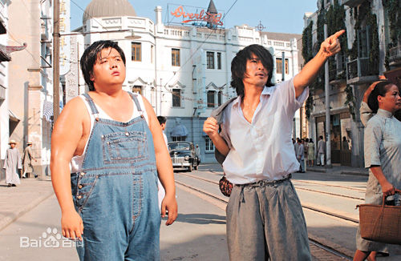

周星驰，1962年6月22日生于香港，祖籍浙江宁波，中国香港演员、导演、编剧、制作人、商人，毕业于无线电视艺员训练班。
1980年成为丽的电视台的特约演员，从而进入演艺圈。1981年出演个人首部电视剧《IQ成熟时》。1988年将演艺事业的重心转向大银幕，并于同年出演电影处女作《捕风汉子》。1990年凭借喜剧片《一本漫画闯天涯》确立其无厘头的表演风格[1] ；同年，因其主演的喜剧动作片《赌圣》打破香港地区票房纪录而获得关注[2] 。1991年主演喜剧片《逃学威龙》，并再次打破香港地区票房纪录[3] 。1995年凭借喜剧爱情片《大话西游》奠定其在华语影坛的地位。1999年自导自演的喜剧片《喜剧之王》获得香港电影年度票房冠军[4] 。
2002年凭借喜剧片《少林足球》获得第21届香港电影金像奖最佳男主角奖以及最佳导演奖[5] 。2003年成为美国《时代周刊》封面人物[6] 。2005年凭借喜剧动作片《功夫》获得第42届台湾电影金马奖最佳导演奖
演艺事业外，周星驰还涉足商界。1989年成立星炜有限公司[16] 。1996年成立星辉公司[17] 。2010年出任比高集团有限公司执行董事[18] 。
1962年6月22日，童年时期的周星驰出生在香港九龙的穷人区[19] ，父亲是浙江宁波人，母亲凌宝儿是广东宝安县人，他的名字是母亲起的，出自《滕王阁序》：“雄州雾列，俊采星驰，台隍枕夷夏之交，宾主尽东南之美[20] 。”
1969年，在周星驰7岁的时候，他的父母正式离异。于是，周星驰和姐姐周文姬、妹妹周星霞一起在母亲凌宝儿的抚养下成长[21] 。周星驰在学校成绩并不好，偏科，除了语文，其它科目成绩都不怎样，老师称赞周星驰画画不错。[20] 周星驰中学就读于香港圣玛利奥英文书院。在中学毕业以后，他做过两个月的办公室助理[8] 。
1980年，周星驰成为丽的电视台的特约演员，从而进入演艺圈[22] 。1981年，出演个人首部电视剧《IQ成熟时》。1982年，周星驰报考了第11期无线电视艺员训练班，但是没有考上；同年，他在戚美珍的介绍下进入第11期无线电视艺员训练班夜训班学习[22] 。
1983年，无线电视艺员训练班后，周星驰正式成为无线电视台的签约艺员；同年，他开始担任儿童节目《430穿梭机》的主持人，并在节目中与拍档龙炳基共同主演单元剧《黑白僵尸》[23] ；此外，他还参演了时装剧《北斗双雄》，在剧中扮演一个问题少年[24] 。
1986年，周星驰被调入无线电视台戏剧组；同年，他首次担任男主角，在单元情景剧《哥哥的女友》中饰演可爱活泼又略带羞涩的潘家伟[25] ；7月，与温兆伦、郭晋安共同出演时装喜剧《城市故事》。1987年，参演爱情剧《生命之旅》，在剧中饰演头脑简单、爱被吹捧，但用情专一、事父至孝的赵子龙[26] 。
 转型电影演员1988年，与万梓良、李美凤共同出演动作片《捕风汉子》，并在片中沿袭了传统香港狭义电影的表演风格；
4月，与郑少秋、汪明荃共同出演时装剧《大都会》，在剧中饰演与郑世昌狼狈为奸、无恶不作的反派人物郑立基 [29]；
此外，他还主演了时装喜剧《斗气一族》，在剧中饰演能说会道的市井小青年邓发 [30]。
989年9月，搭档李连杰主演动作片《龙在天涯》，在片中饰演外表大大咧咧。
989年9月，搭档李连杰主演动作片《龙在天涯》，在片中饰演外表大大咧咧。
989年9月，搭档李连杰主演动作片《龙在天涯》，在片中饰演外表大大咧咧。
989年9月，搭档李连杰主演动作片《龙在天涯》，在片中饰演外表大大咧咧。
989年9月，搭档李连杰主演动作片《龙在天涯》，在片中饰演外表大大咧咧。